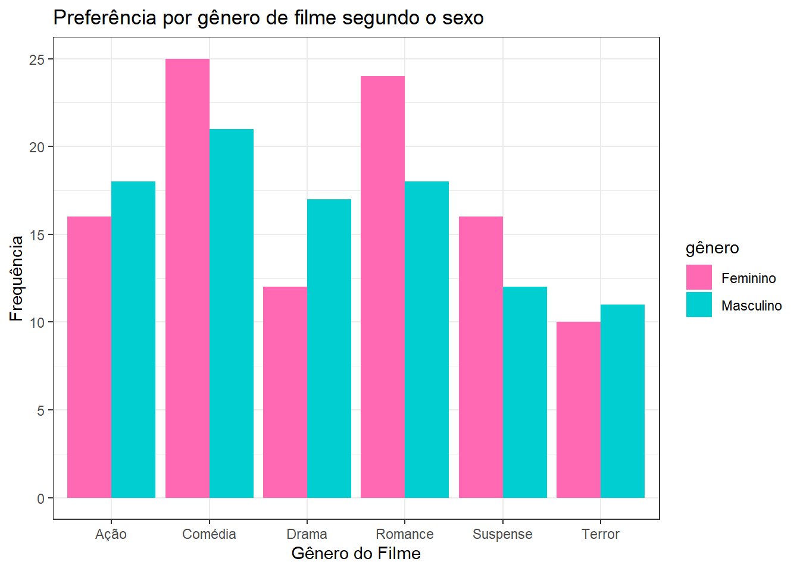
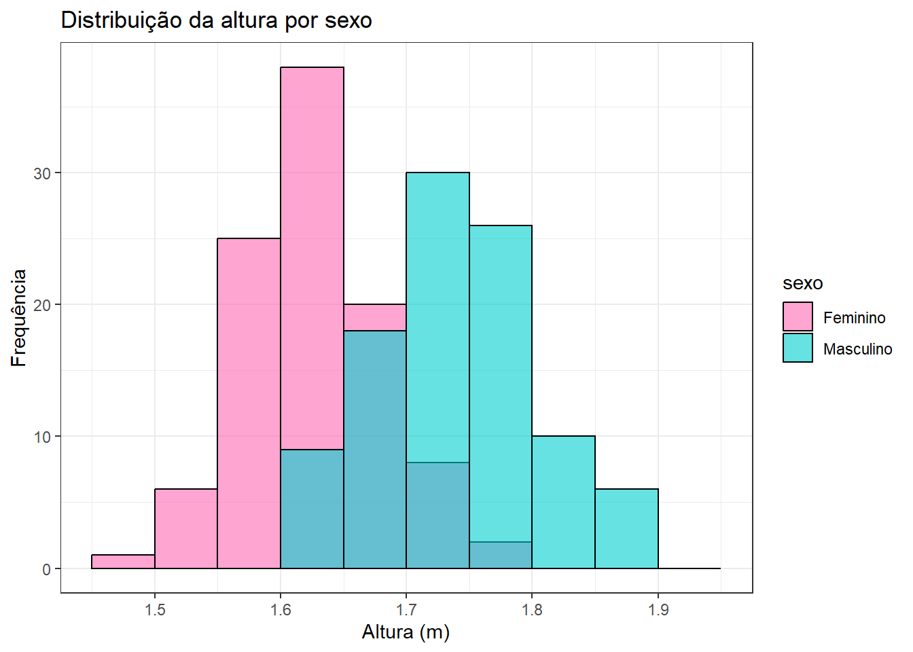
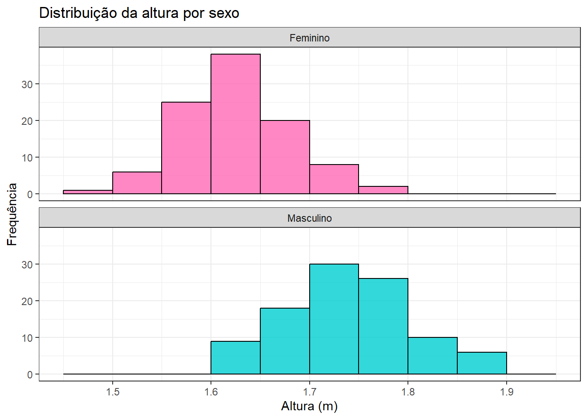
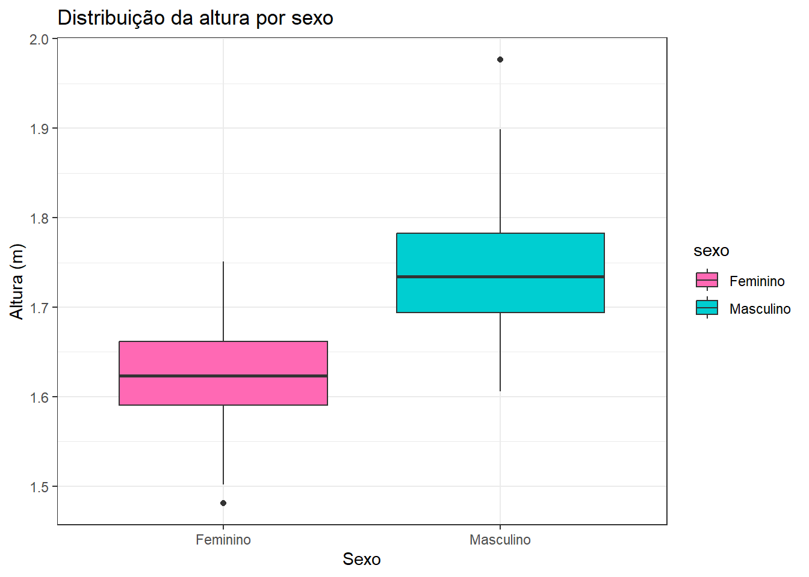
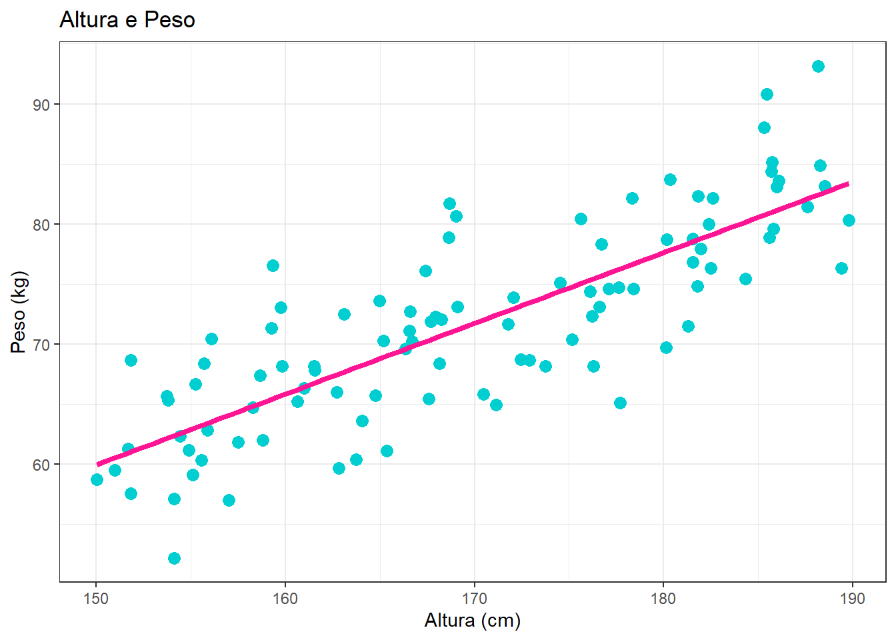
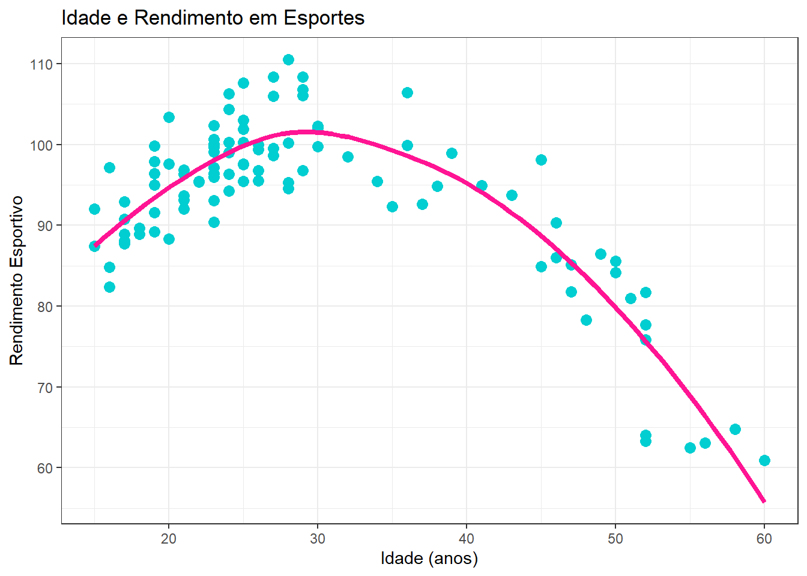
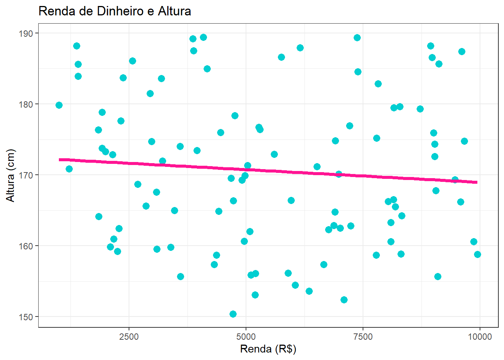
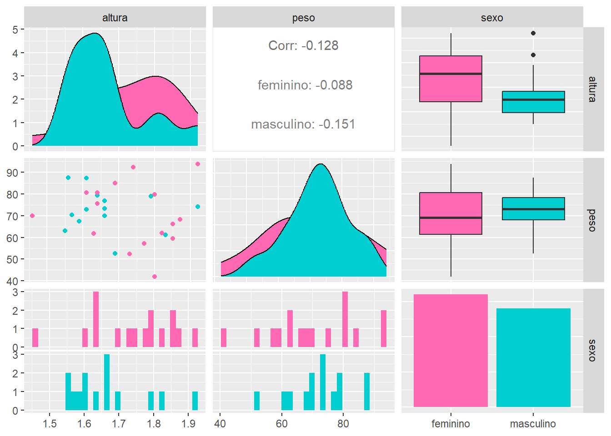

8 Modelos Gráficos de Associação entre Duas Variáveis
Além das medidas númericas que quantificam a associação entre duas variáveis, como as vistas no capitulo anterior, também é possível analisar essa relação de forma mais visual, através de gráficos.
8.1 Gráfico de barras
É adequado quando ambas variáveis são categóricas (qualitativas nominais ou ordinais). Trás um ótimo comparativo entre as frequências absolutas.
Exemplo: explorar a relação entre gênero e preferencia por um tipo de filme.
ggplot(dados1, aes(x = filme, fill = gênero)) +
geom_bar(position = "dodge") +
scale_fill_manual(values = c("Feminino" = "hotpink",
"Masculino" = "darkturquoise")) +
labs(title = "Preferência por gênero de filme segundo o sexo",
x = "Gênero do Filme", y = "Frequência") +
theme_bw()
8.2 Histograma
Outra opção para comparar distribuições de uma variável quantitativa por grupo categórico são os histogramas sobrepostos ou lado a lado.
Adequado para uma variável que é quantitativa e queremos observar a distribuição da variável contínua separada por grupos definidos por uma variável categórica.
Exemplo: Relação de altura (quantitativo) entre de homens e mulheres (qualitativo).
# Definindo intervalos personalizados para o eixo x
intervalos <- seq(1.45, 1.95, by = 0.05)
ggplot(dados2, aes(x = altura, fill = sexo)) +
geom_histogram(position = "identity", alpha = 0.6, color = "black",
breaks = intervalos) +
scale_fill_manual(values = c("Feminino" = "hotpink",
"Masculino" = "darkturquoise")) +
labs(title = "Distribuição da altura por sexo", x = "Altura (m)", y = "Frequência") +
theme_bw()
Com o mesmo exemplo, mas sem ser sobreposto:
ggplot(dados2, aes(x = altura, fill = sexo)) +
geom_histogram(alpha = 0.8, color = "black", breaks = intervalos) +
scale_fill_manual(values = c("Feminino" = "hotpink",
"Masculino" = "darkturquoise")) +
facet_wrap(~sexo, ncol = 1) +
labs(title = "Distribuição da altura por sexo",
x = "Altura (m)", y = "Frequência") +
theme_bw() +
theme(legend.position = "none")
8.3 Boxplot
Útil quando se deseja comparar a distribuição de uma variável quantitativa entre diferentes grupos definidos por uma variável categórica.
Ele mostra a mediana (linha central da caixa), o primeiro e terceiro quartis (bordas da caixa), valores mínimos e máximos (sem considerar outliers), outliers (pontos individuais fora dos limites).
Exemplo: Relação de altura (quantitativo) entre de homens e mulheres (qualitativo).
ggplot(dados3, aes(x = sexo, y = altura, fill = sexo)) +
geom_boxplot() +
scale_fill_manual(values = c("Feminino" = "hotpink",
"Masculino" = "darkturquoise")) +
labs(title = "Distribuição da altura por sexo",
x = "Sexo", y = "Altura (m)") +
theme_bw()
8.4 Gráfico de dispersão
É útil quando ambas variáveis são quantitativas.
Esse gráfico permite identificar padrões de correlação linear ou não linear (que será explicado posteriormente), além de possíveis agrupamentos por categoria.
Exemplo 1: Com relação linear clara entre altura e peso.
ggplot(dados_linear, aes(x = altura, y = peso)) +
geom_point(color = "darkturquoise", size = 3) +
geom_smooth(method = "lm", color = "deeppink", se = FALSE, size = 1.5) +
labs(title = "Altura e Peso",
x = "Altura (cm)",
y = "Peso (kg)") +
theme_bw()
O gráfico acima mostra uma relação de linear positiva entre a altura e o peso. Isso indica que à medida que a altura aumenta, o peso também tende a aumentar proporcionalmente, com isso, podemos concluir que a uma correlação forte e direta entre as duas variáveis.
- Exemplo 2: Com relação não linear, entre rendimento esportivo e idade.
ggplot(dados_naolinear, aes(x = idade, y = rendimento)) +
geom_point(color = "darkturquoise", size = 3) +
geom_smooth(method = "loess", color = "deeppink", se = FALSE, size = 1.5) +
labs(title = "Idade e Rendimento em Esportes",
x = "Idade (anos)",
y = "Rendimento Esportivo") +
theme_bw()
O gráfico acima mostra uma relação não linear entre a idade e o rendimento esportivo. No início, o rendimento (eixo Y) tende a aumentar com a idade (eixo X), mas após um certo ponto (o pico), o rendimento começa a diminuir à medida que a idade avança.
- Exemplo 3: Sem relação linear, entre renda (em reais) e altura (em cm).
ggplot(dados_semrelacao, aes(x = renda, y = altura)) +
geom_point(color = "darkturquoise", size = 3) +
geom_smooth(method = "lm", color = "deeppink", se = FALSE, size = 1.5) +
labs(title = "Renda de Dinheiro e Altura",
x = "Renda (R$)",
y = "Altura (cm)") +
theme_bw()
O gráfico acima mostra a falta de relação entre renda e altura de uma pessoa. Podemos observar que os pontos estão dispersos aleatóriamente pelo gráfico, sem qualquer padrão aparente. A linha de tendência ajustada é praticamente horizontal, indicando que a altura de uma pessoa não é um bom preditor de sua renda, e vice-versa. Ou seja, não há uma correlação linear entre as duas variáveis.
8.5 Matriz de gráficos (ggally)
Quando lidamos com análises mais abrangenres, especialmente para casos que temos muitas variáveis e queremos visualizar todas as associações par a par, podemos usar o pacote ggally do R, que é uma extensão do ggplot2. O pacote cria matrizes de gráficos, combinando diferentes tipos (histogramas, boxplots, densidades, etc.) dentro de uma única matriz onde cada cécula da matriz representa uma visualização da associação entre duas variáveis.
Função ggpairs():
A função ggpairs() é a principal do pacote. Ela gera uma matriz de gráficos de dispersão generalizada, onde cada célula da matriz é um gráfico que representa a relação entre duas variáveis. A matriz gerada por ggpairs() é dividida em três regiões principais:
- Diagonal: Mostra a distribuição de cada variável igualmente. Dependendo do tipo de variável a funçao apresenta diferentes tipos de gráficos.
- Triângulo inferior: Mostra as relações entre os pares de variáveis, através de graficos de dispersão, boxplot, graficos de frequência, entre outros, dependendo do tipo de variável.
- Triângulo superior: Mostra medidas de associação númerica, como as vistas no capítulo anterior.
O exemplo abaixo usa o banco de dados disponível para download aqui.

Embora ggpairs() seja a principal, o ggally oferece outras funções para visualizações mais específicas, como ggcorr(), ggsurv(), etc.
8.6 Exercícios
Usando o banco de dados mtcars do R, crie um boxplot para entender a associação entre o número de cilindros de um carro (cyl) e sua eficiência de combustível (mpg). Usa a vcariável cyl como eixo X e mpg como eixo Y. Interprete os resultados.
Usando o banco de dados iris do R, crie um histograma (sem ser sobreposto, como no segundo exemplo da seção de histograma desse capítulo), que associe a largura da sépala (Sepal.Width) para cada espécie (Species). Interprete os resultados. Dica: Use facet_wrap(~ Species) para criar um painel separado para cada espécie, permitindo uma comparação lado a lado.